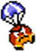
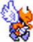
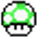
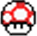
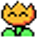
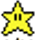

O jogo tem como objetivo controlar o personagem Mario Voador para explodir os inimigos e pegar itens acumulando assim pontos que ao termino do jogo poderá ficar registrado no rank caso seja maior que a pontuação existente.
O jogo inicia-se no nivel 1, o jogador possui 2 vidas e uma estrela. Os projeteis disparados estaram no nível 1 e a quantidade também será de 1 projétil por vez.
Movimente o personagem Mario Voador pela tela do jogo desviando dos inimigos e lançando projéteis que faram com que os inimigos explodam recebendo assim pontos e itens. Ao encostar em um inimigo será perdido uma vida. A perda de todas causará o fim do jogo. Para pegar um item basta encostar nele com o personagem. Conforme acumula-se pontos passa-se de nível.
O fim do jogo se da quando o jogador esgota todas suas vidas.
Teclas de Direção - cima, baixo, esquerda e direita: Move o personagem para cima, baixo esquerda e direita respectivamente. Tecla Barra de Espaço: Faz com que o personagem lance um ou mais projeteis. Tecla Shift: Faz uso do item estrela que explode todos os inimigos destrutiveis na tela.
Tartaruga Vermelha: É necessário 2 projeteis para destruir este inimigo. Ganha-se 200 pontos ao explodi-la. Surge em uma posição vertical aleatória e seu movimento é constante para a esquerda. Entra no jogo a partir do nível 1.
Paraquedas: É necessário 1 projetil para destruir este inimigo. Ganha-se 100 pontos ao explodi-lo. Surge em uma posição horinzotal aleatória e seu movimento é constante para baixo alternando de direita para esquerda. Entra no jogo a partir do nível 2.
Tartaruga Azul: É necessário 3 projeteis para destruir este inimigo. Ganha-se 500 pontos ao explodi-la. Surge em uma posição vertical aleatória e seu movimento é constante para a direita alternando de cima para baixo. Entra no jogo a partir do nível 3.
Bala de Canhão: É um inimigo indestrutivel. Surge a cada 5 segundos na mesma posição vertical que o Mario Voador. Seu movimento é constante para a direita. Entra no jogo a partir do nível 4.
Ao explodir seus inimigos pode ou não surgir itens na posição do inimigo destruido. É sorteado aleatóriamente qual item irá surgir.
Moeda: Pegue este item e ganhe 100 pontos.
Moeda Azul: Pegue este item e ganhe 200 pontos.
Vida: Pegue este item e ganhe uma vida.
Cogumelo: Pegue este item e aumente quantidade de projeteis por disparo. A cada vez que se encosta em um inimigo a quantidade de projeiteis por disparo é diminuida.
Florzinha: Pegue este item e aumente o nivel de seus projeteis. A cada vez que se encosta em um inimigo o nível de seus projeiteis é diminuido.
Estrela: Pegue este item e ganhe mais uma estrela.
Nível 1: Nível na qual o jogo se inicia. Neste nível estará presente o seguinte inimigo: Tartaruga Vermelha Nível 2: Nível alcançado ao se acumular uma quantidade miaor ou igual a 2000 pontos. Neste nível estarão presentes os seguintes inimigos: Tartaruga Vermelha e Paraquedas Nível 3: Nível alcançado ao se acumular uma quantidade miaor ou igual a 6000 pontos. Neste nível estarão presentes os seguintes inimigos: Tartaruga Vermelha, Paraquedas e Tartaruga Azul Nível 4: Nível alcançado ao se acumular uma quantidade miaor ou igual a 15000 pontos. Neste nível estarão presentes os seguintes inimigos: Tartaruga Vermelha, Paraquedas, Tartaruga Azul e Bala de Canhão